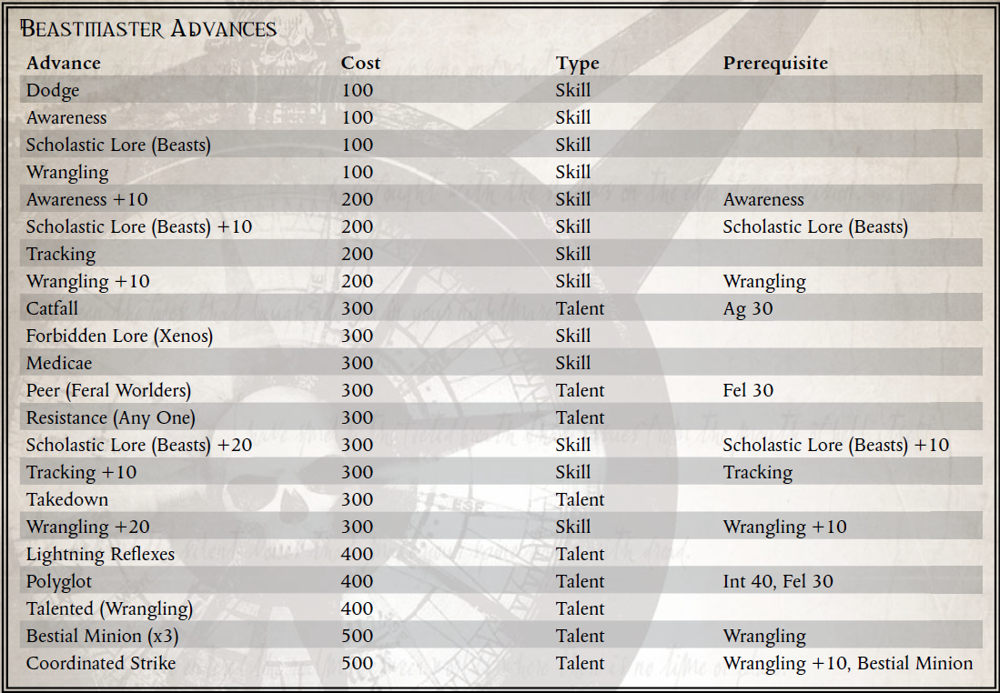

“哦，别介意杀戮之喉，只要你不看他，他就完全无害——哦，天哪，我们又来了……”
——传教士 Speraza，在宣布 Astron VII 的改造“充分完成”之前不久
Koronus Expanse 是各种奇怪而致命的生物的家园，从 Burnscou 的致命野兽到 Klaen's Gate 的奇怪而空灵的生物。考虑到善于操纵环境的智能物种的倾向，出于某种原因，不可避免地有人试图驯化这些生物中的许多。虽然想成为驯兽师的人并不总是成功（仅在伯恩斯库尔就以这种方式死去的人数几乎令人难以置信），但可以训练一些动物来执行某些任务。其中最简单的包括充当守卫生物，有些物种甚至可以学习奇异的任务，例如种植监听设备或偷窃特定物品。传教士独自在广域旅行，但几乎所有的传教士都带着武器旅行，有些人选择用可以保护他们的守望生物武装自己，警告他们危险，或者按照帝皇的意愿协助他们完成任务。在帝国边界之外的荒野中，一个忠诚的、毫无疑问的盟友常常意味着生与死之间的差异，这令人毛骨悚然。鉴于他们偏爱成为色彩缤纷的角色 Rogue Traders，他们也经常发现异国情调的野兽陪伴他们，利用这些奇怪的生物来打动（或恐吓）贸易联系人、经济竞争对手以及他们碰巧与之互动的任何其他人。
为了训练一个生物，兽王需要找到一个既能接受训练，又能训练自己的生物。有很多方法可以让一个人走上兽王的道路，其中一些比其他的更自然。卡利西斯贵族的大家族的惯例是让动物和野生动物作为同伴，而那些与贵族共度时光的人往往是他们传统和文化的模仿者。还有一些人有驯服和控制生物的实际经验，例如在他们的家乡进行狩猎。有些人甚至可能从过去与邪恶而声名狼藉的野兽屋的交易中获得了他们的技能，这个阴暗的犯罪组织满足了卡利西斯区对凶猛的斗斗生物永无止境的胃口
无论他们接受何种不同的角色训练，许多兽王都有几个共同特征——耐心地教导他们的生物如何响应他们的命令并执行他们指定的任务，以及希望看到这些生物以某种方式发展。当然，兽王可能会选择通过养育或暴力来实现这一点，并且可能会这样做，以期创造一种尖牙恐怖，将他的敌人撕成碎片，就像看到一个年轻的生物成长和发育一样。虽然大多数兽王对他们的野兽有某种形式的爱或至少是尊重，但情况并非总是如此。许多是关于从字面上咬掉喂食它们的手的生物的故事（通常紧随其后的是身体的其余部分）。
就连广袤无垠的一些外星生物也已在一定程度上被驯服。在 Footfall 和 Port Wander 中，人们会定期听到关于 Rogue Traders 恐吓商业伙伴与驯服的有爪巨兽或 Astropaths 交易的故事，他们使用一小群看起来无害的翼松鼠作为间谍。当然，许多这些故事充其量只是幻想。兽王有时会对自己的能力过于自信，而这种狂妄自大的结果往往是惊人的（如果不是立即致命的话）。与致命的野兽打交道时，鲁莽和虚张声势可能是致命的缺陷。此外，有些生物是完全不可能训练的，无论是由于根深蒂固的性情还是险恶的兽性智慧。
外星兽王有时会进入盗贼商人的随从。兽人经常以繁殖最大、最卑鄙的史古格而自豪，而克鲁特可能会利用克鲁特猎犬来协助狩猎。一名黑暗灵族登上 Rogue Trader 的船只，可能会在 Commorragh 的角斗场中饲养一只或多只奇怪的、卑鄙的战斗野兽
兽王不仅是那些偏爱外来宠物的人，而且是那些在训练和指挥各种生物方面拥有真正天赋的人。一些兽王对他们的冲锋产生了真正的尊重，而另一些则仅仅通过恐惧来统治他们野兽般的下属。作为回报，受过训练的野兽可以提供任何东西，从锋利的下巴到灵活的手指来保持感官
所需职业：任何探险家
替代等级：3 或更高 (10,000 xp)
要求：敏捷35，智力35
其他要求：这位探险家必须在过去驯服过野生动物（在此过程中没有受到致命伤害）。

在哪里可以找到生物
ROGUE TRADER 核心规则手册包含 Grapplehawk，一种增强的控制论鸟类（参见 ROGUE TRADER 核心规则手册的第 375 页）。如果游戏大师希望使用其他补充品，KORONUS BESTIARY 包含大量来自广域的致命生物，其中许多适合有进取心的兽王。当然，游戏大师总是对什么拥有最终决定权——而且极其狡猾和任性的生物，如不灭的 Vaporius、Medusae 和基因窃取者根本无法控制（并且几乎肯定会立即杀死任何愚蠢到尝试的人）！玩家应该与游戏大师一起寻找合适的生物。
新天赋：野兽小兵
先决条件：争吵
这位探险家获得了一个野兽仆从，形式为一些与他的意志相结合的网络生物或他用争吵技能驯服的野兽。该生物遵循他的基本命令，并在战斗中的每个回合后立即进行回合。
如果他不知何故失去了这个生物，由于它的过早死亡或另一个不幸的分离，他可以在花费适当的时间安排替换它（或哀悼它的丢失）后，由游戏管理员自行决定获得一个新的。
新天赋：协同打击
先决条件：争吵+10，野兽仆从
探险者和他的野蛮冲锋致命地一致行动，努力为对方提供在战斗中利用的机会和机会。无论是成群结队地猎杀他们的猎物，还是为彼此创造空缺，两人都可以将他们的攻击与训练有素的杀伤力同步。
作为一个反应，在远程或近战攻击命中后，这个探险者可以进行一次挑战 (+0) 角力测试。如果他成功了，他获得的一个拥有野兽随从天赋的生物在下一个针对该目标的攻击行动中获得 +20 加值，直到其下一回合结束。